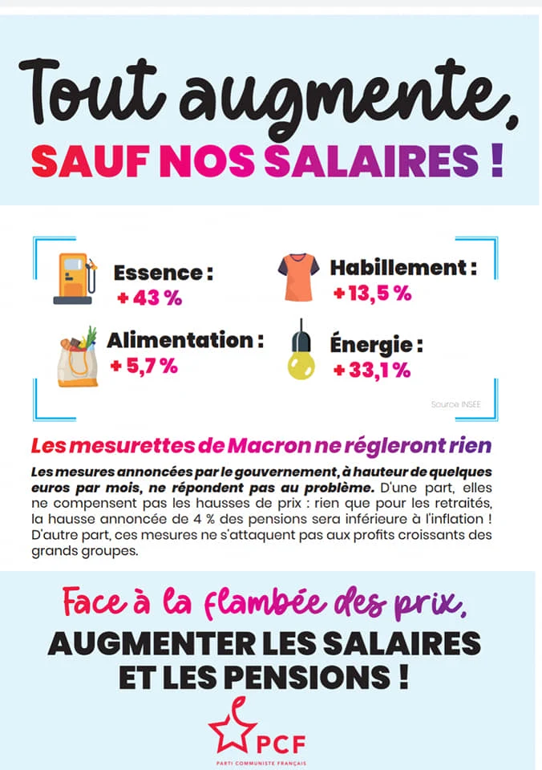

Publication d’archives
Face à la flambée des prix, augmenter les salaires et les pensions.
Date indiquée par Facebook · 30 juin 2022
Texte conservé avec la publication
Contexte du dossier
Fin juin, l’exigence est directe : à la flambée des prix doivent répondre des augmentations de salaires et de pensions. En septembre, la page publie une tribune de Fabien Roussel au Monde. Son auteur y défend une garantie d’emploi, de formation et de salaire tout au long de la vie. Il refuse que la gauche se résigne au chômage de masse, tout en affirmant la nécessité des protections immédiates contre ses effets.
Le billet du 27 septembre ouvre un débat sur la gouvernance de la protection sociale. Il présente la création de l’Unédic et le paritarisme comme des leviers par lesquels le patronat aurait reconquis du pouvoir sur le salaire socialisé. C’est une lecture politique de l’histoire, exposée comme telle. Elle ne doit pas être fondue sans nuance dans les autres messages qui qualifient l’assurance chômage de conquête sociale : le corpus porte aussi ces différences d’accent.

Sources
Archive rouge · export Facebook · AR-0002-FB-01867
À lire aussi · Infâme: à Noël Macron dépouille les chômeurs